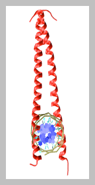
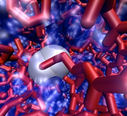
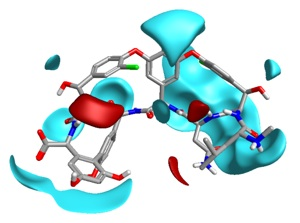

Daniel Barr Research Group
GCN4 is a DNA-binding protein that is part of the heat-shock response in yeast. As a member of the bZIP (basic leucine zipper) family, GCN4 binds DNA as a chopstick-shaped dimer. Upon binding DNA, large regions of the protein fold into alpha-helices, providing an unfavorable change in entropy to offset the favorable change in enthalpy of the system arising from the new protein-DNA contacts. GCN4 binds to B-DNA with little or no bending or distortion of the DNA. We are performing molecular dynamics simulations of GCN4 bound to its biological operator and non-operator DNA sequences to understand how GCN4 recognizes its target DNA sequence. A major goal of the project is to assess the contributions of direct and indirect readout mechanisms.
GCN4
Dr. Daniel Barr
Principal Investigator
Stephanie Koch
Peptide-DNA binding assays, 2012-present
Caitlyn Moccaldi
Peptide-DNA binding assays, 2012-present
Amanda Marsh
Peptide-DNA binding assays, 2012-present
Romy Baghat
Small Molecule Drug Design, 2012-present
Shaquille Barnes
Small Molecule Drug Design, 2012-present
Danielle McHarris
GCN4 Simulations, 2011-present
Trieu Le
Protein-DNA interaction analysis, 2012
Phu Do
Protein-DNA interaction analysis, 2012
Nathaniel Flower
Protein-DNA interaction analysis, 2012
Armin Rosic
DNA sequence and flexibility analysis, 2012-2013
Suliman Salman
Peptide Simulations, 2011-2012
Currently: Dental Student, Case Western Reserve University
Nan Thuzar Myint
Peptide Synthesis, 2011-2012
Currently: Graduate Student, Syracuse University
Karolina Kirilko
Chiral NMR, 2011-2012
Chris Fitts
Peptide Synthesis, 2011-2012
Interested in one of these projects (or in developing a project of your own)? Drop me an email or stop by my office to discuss open positions in the lab!
Daniel Barr
Group Members
Contact
Sequence-Specific DNA-binding Peptides

Sequence-specific binding of proteins and peptides to DNA plays a critical role in regulation of cellular function and is consequently implicated in many human diseases. One goal in our lab is to determine how long of a peptide is required in order to observe sequence-specific binding properties with DNA. We are performing simulations of the recognition helices of several proteins (including the lac repressor, the gal repressor, and GCN4) to determine the extent to which the recognition helices can provide sequence-specific readout of DNA in the absence of the rest of the protein.
Synthesis of DNA-binding peptides and drug candidates
For therapeutic applications, it is often necessary to have drugs in the form of small molecules or peptides, rather than large biomolecular compounds. We are using the insights gained from our simulations to design and synthesize short peptides, bio-functionalized nanoparticles, and small molecule drug candidates that bind DNA in a sequence-dependent manner. We are working with Cresset BioMedical Discovery as part of the Cresset Academic Research Partnership to apply their modeling and drug discovery tools to the results of our experiments and simulations.
Visualization of Biological Molecules
Effective visualization of biological and biochemical molecules is essential for understanding the nature and function of these compounds. We are working to develop artistic, aesthetic representations of important biomolecular complexes for use in education. The images, movies, and multimedia presentations developed in our group play an important role in communicating how important and fascinating these molecules can be both in the classroom and in outreach to the community.


Picture from: http://www.cresset-group.com/2010/06/fv_vanco/